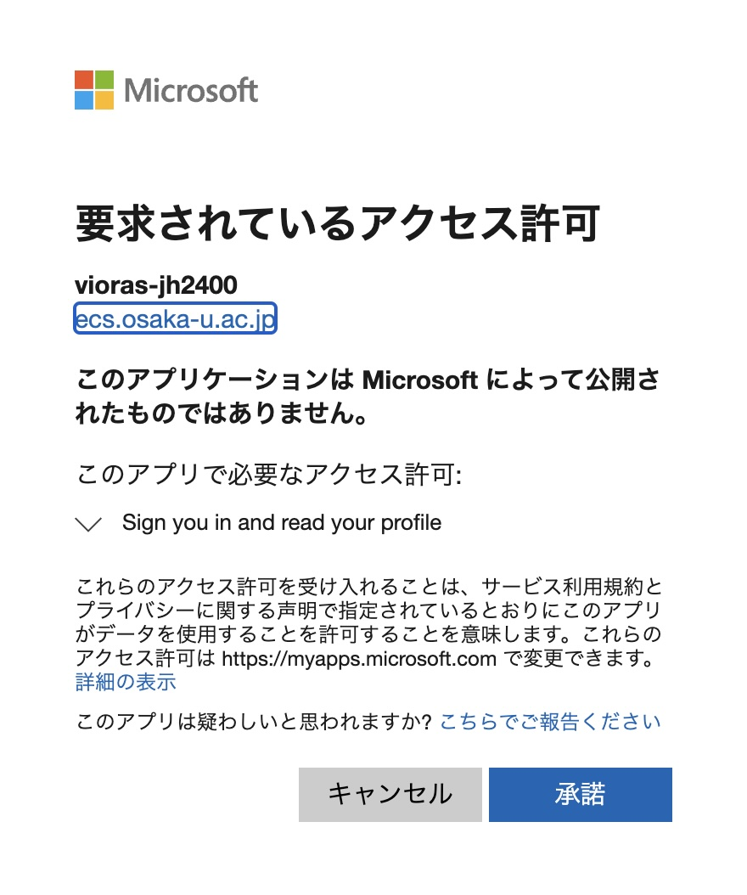
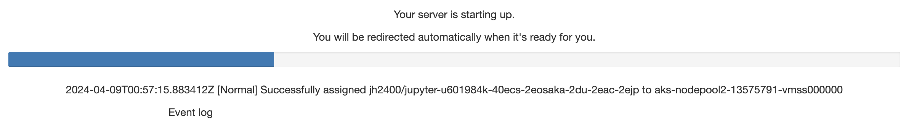
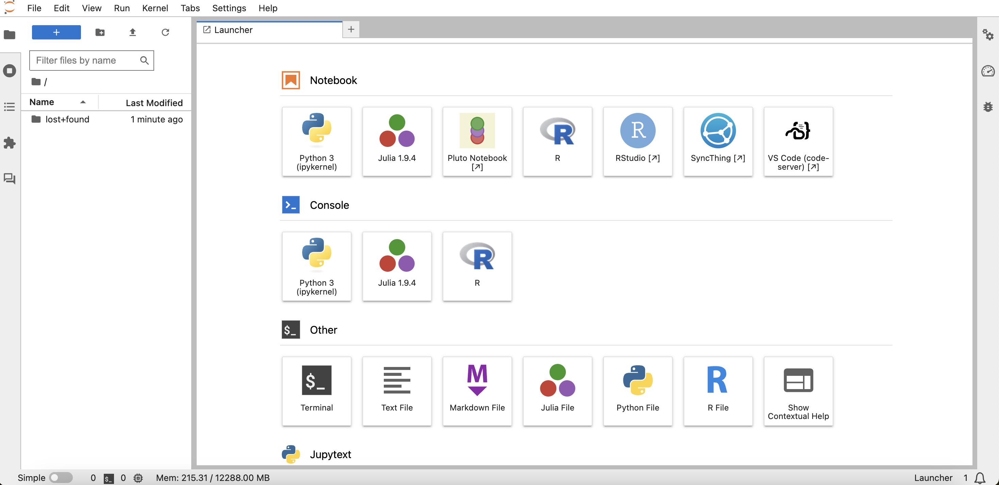
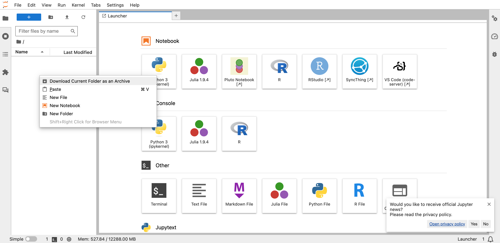
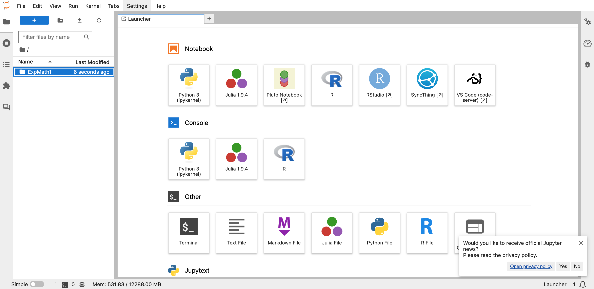
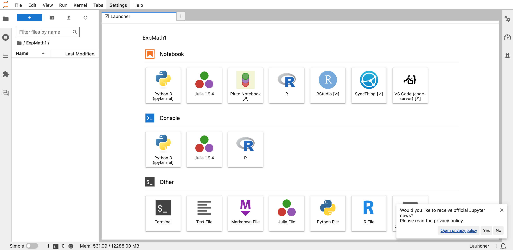
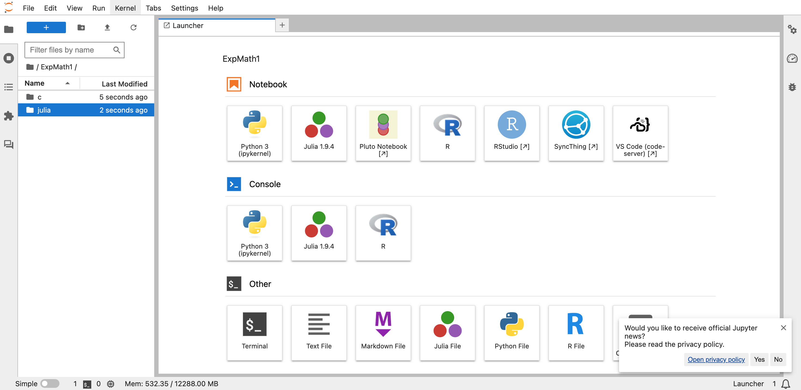

JupyterHub
ざっくりと言えば，（Julia を本格的に利用する際に導入してもらう予定の）JupyterLab というものを，みなさん個人の PC に整備するのではなく，クラウド上のサービスとしてオンラインで利用するものです（C 言語も Julia もどちらも利用できます）．他にも，PythonやRも利用できます．
なお，個人のPCの JupyterLab を導入すると，他の言語も扱えるようにできるなど，カスタマイズの自由度も高まります．
アクセス方法
JupyterHubのページにアクセスして，阪大のIDを使ってサインインします．
もし次のような画面が現れたら「承諾」をクリックします．

次のような画面になりますが，しばらく待機します．

しばらくすると，次のような画面になります．

ここまでくれば，プログラミングを学習する環境は整ったといえますが，オフラインでは作業できない点には注意してください．
なお，設定 → 言語 から，表示言語を変更することもできます．
使用する際の注意
その他の注意点です．
- バックアップは頻繁に取るようにしてください
- 講義中にも繰り返し注意しますが，追加のパッケージやライブラリは追加しないでください （なにか試してみたいときは必ず教員に相談してください）
準備
左の方のブロック中で右クリックをし，「New Folder」を選択すると，新しいフォルダが生成され，フォルダの名前を例えば「ExpMath1」とします．


この ExpMath1 というフォルダをダブルクリックすると，次のような画面になります．

このフォルダの中に，さきほどと同じ要領で，「c」というフォルダと「julia」というフォルダを作ります．

「c」をダブルクリックします．
次に，次のプログラムの右下の「view raw」を右クリックし，保存します． 保存する際の名前は拡張子も込みで「hello1.c」としてください． おそらく，特に何もしなければこの名前のフォルダが，各自のPCのダウンロードフォルダなどに保存されるはずです．
ダウンロードできたら，次のようにドラッグ・アンド・ドロップでJupyterHubの「c」のフォルダにコピーします． このように，ファイルはどんどん追加していけますし，逆に，JupyterHub上にあるファイルは右クリックすればローカルにダウンロードすることができます．
（ターミナルに慣れている学生への補足）ターミナルを立ち上げて，該当のフォルダに移動し，view raw からリンクのアドレスをコピーしたうえで，wget （ペースト） を実行すれば，よりダイレクトにプログラムをダウンロードできます．
この hello1.c というファイルはC言語のプログラムファイルです． プログラムの中身の説明は後の講義で行うこととし，ここでは，実行する手順を示しておきます． JupyterHub上ではいくつかの方法がありますが，多くの学生が個人のPCでも使っていると思われる VS Code を用いた方法を紹介しておきます．
まず，VS Codeをクリックし，VS Codeを起動させ，フォルダやファイルを選択して，プログラムの中身を表示させます． おおよその手順は次の動画のとおりです． もし，"Trust the author" というようなウィンドウが表示された場合は，"Yes"を選択してください．
次に，ターミナルを立ち上げて，プログラムファイルをコンパイルして実行します． おおよその手順は次の動画のとおりです．
ターミナルを立ち上げた後に入力している内容を簡単にまとめておきます．
pwd
いまいるフォルダ（ディレクトリ）を表示．/home/jovyan と表示されていますが，jovyan の部分は異なるかもしれません．
ls
いまいるフォルダの中にあるフォルダやファイル一式を表示．
cd ExpMath1/
ExpMath1 というフォルダへ移動（最後の / は無くてよい）．
cd c/
c というフォルダへ移動．2つの移動をまとめて
cd ExpMath1/c/
とすることもできます．
gcc hello1.c
hello1.c というC言語プログラムをコンパイル．
すると，a.out という実行ファイルが生成されます（生成されたことは ls で確認できます）．最後にこれを実行します．
./a.out
Hello World! と表示されていれば，ひとまず成功です．
注意：コンパイルと実行を一度に（続けて）行うこともできます．
gcc hello1.c && ./a.out
なお，一つ上のフォルダに戻るときは
cd ..
とします．はじめの /home/jovyan にまで一気に戻りたいときは
cd
とします．